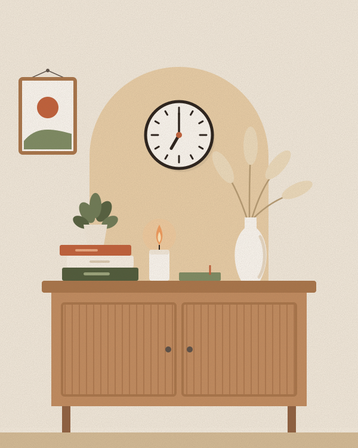

Uma casa que acolhe e uma rotina que não sufoca. Aqui reunimos rituais simples para as manhãs, jeitos
práticos de destralhar, planejar a semana e criar um cantinho de calma.

6 min de leitura
Manhãs que começam devagar
Começar o dia checando mensagens é como abrir a porta de casa para todo mundo entrar ao mesmo tempo. Um
ritual matinal curto — 20 minutos bastam — cria um respiro antes das demandas do dia.
5 minÁgua e janela aberta: hidrate-se e deixe a luz natural entrar.
5 minAlongamento: movimente o corpo ainda no ritmo do sono.
5 minCafé sem tela: só o café, o cheiro e o silêncio.
5 minTrês prioridades: anote as três coisas que fariam o dia valer a pena.
Não é preciso acordar muito mais cedo de uma vez. Adiante o despertador em dez minutos por semana até
encontrar o horário que funciona para você.
Para testar amanhã: deixe o celular longe da cama e só pegue nele depois do café.
5 min de leitura
Destralhe em 15 minutos por dia
Organizar a casa inteira num fim de semana cansa só de pensar. Dividir em pequenas sessões diárias torna o
processo leve e, principalmente, possível.
Uma gaveta, uma prateleira, um cantinho por vez. Termine antes de começar outro.
Três caixas: fica, doa e descarta. Na dúvida, use uma caixa “talvez” e reavalie em 30 dias.
Regra do “um entra, um sai”: comprou uma camiseta nova? Uma antiga vai para doação.
Tudo tem um lugar. Se algo vive “em cima da mesa”, ainda não encontrou a sua casa.
Para testar hoje: coloque um timer de 15 minutos e destralhe aquela gaveta da cozinha que sempre emperra.
5 min de leitura
Planejamento semanal no papel
Escrever à mão ajuda a enxergar a semana inteira de uma vez e a perceber quando estamos prometendo mais do
que cabe. Reserve 20 minutos no domingo à tarde e siga este checklist:
Revisar os compromissos fixos da semana (aulas, trabalho, consultas).
Escolher no máximo três prioridades.
Reservar blocos de tempo para estudo e também para descanso.
Planejar o cardápio e montar a lista de compras.
Separar a roupa de segunda-feira.
Deixe espaços vazios na agenda. Imprevistos acontecem, e uma semana com folga é uma semana que não
desmorona no primeiro atraso.
Para testar hoje: escreva num papel as três prioridades da sua semana e cole onde você vai ver todos os dias.
4 min de leitura
Um cantinho de calma em casa
Não é preciso um cômodo inteiro: uma poltrona perto da janela, uma almofada no chão ou um canto da varanda
podem virar o seu lugar de pausa.
Luz quente: um abajur com lâmpada amarela deixa o ambiente aconchegante à noite.
Plantas fáceis: jiboia, espada-de-são-jorge e zamioculca toleram meia-sombra e pouca rega.
Texturas naturais: manta de algodão, cesto de palha e madeira.
Um objeto de ritual: uma vela, um livro em andamento ou um caderno para anotar pensamentos.
Para testar hoje: escolha um canto da casa e passe dez minutos ali, sem celular, só com uma bebida quente.